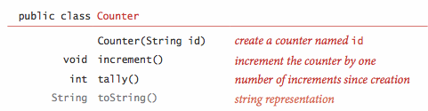
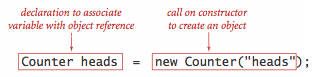
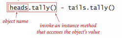
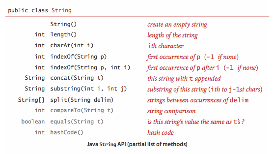
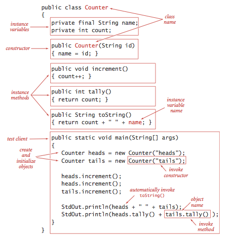
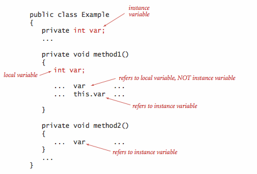
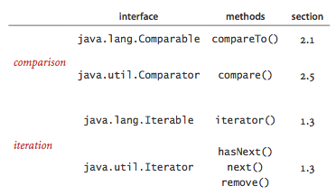
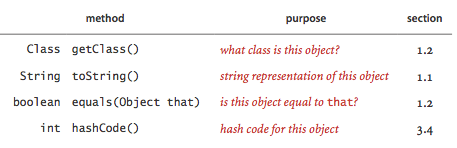

Data Abstraction
§ Object-oriented programming.
Programming in Java is largely based on building data types. This style of programming is known as object-oriented programming, as it revolves around the concept of an object, an entity that holds a data type value. With Java's primitive types we are largely confined to programs that operate on numbers, but with reference types we can write programs that operate on strings, pictures, sounds, or any of hundreds of other abstractions that are available in Java's standard libraries or on our booksite. Even more significant than libraries of predefined data types is that the range of data types available in Java programming is open-ended, because you can define your own data types.
- Data types. A data type is a set of values and a set of operations on those values.
- Abstract data types. An abstract data type is a data type whose internal representation is hidden from the client.
- Objects. An object is an entity that can take on a data-type value. Objects are characterized by three essential properties: The state of an object is a value from its data type; the identity of an object distinguishes one object from another; the behavior of an object is the effect of data-type operations. In Java, a reference is a mechanism for accessing an object.
- Applications programming interface (API).
To specify the behavior of an abstract data type,
we use an application programming interface (API),
which is a list of constructors and instance methods
(operations), with an informal description of the effect of each,
as in this API for
Counter:
- Client. A client is a program that uses a data type.
- Implementation. An implementation is the code that implements the data type specified in an API.
§ Using abstract data types.
A client does not need to know how a data type is implemented in order to be able to use it.
- Creating objects.
Each data-type value is stored in an object.
To create (or instantiate) an individual object,
we invoke a constructor by using the keyword
new. Each time that a client usesnew, the system allocates memory space for the object, initializes its value, and returns a reference to the object.
- Invoking instance methods.
The purpose of an instance method is to operate on data-type values.
Instance methods have all of
the properties of static methods: arguments are passed by value,
method names can be overloaded, they may have a return value, and they may cause
side
effects. They have an additional property that characterizes them:
each invocation is associated with an object.

- Using objects.
Declarations give us variable names for objects that we can use in code.
To use a given data type, we:
- Declare variables of the type, for use in referring to objects
- Use the keyword
newto invoke a constructor that creates objects of the type - Use the object name to invoke instance methods, either as statements or within expressions
For example, Flips.java is a Counter.java client that takes a command-line argument
Tand simulateTcoin flips. - Assignment statements.
An assignment statement with a reference type creates a copy of the reference
(and does not create a new object).
This situation is known as aliasing:
both variables refer to the same object.
Aliasing is a common source of bugs in Java programs,
as illustrated by the following example:
The code prints the stringCounter c1 = new Counter("ones"); c1.increment(); Counter c2 = c1; c2.increment(); StdOut.println(c1);"2 ones". - Objects as arguments.
You can pass objects as arguments to methods.
Java passes a copy of the argument value from the calling program to
the method.
This arrangement is known as pass by value.
If you pass a reference to an object of type
Counter, Java passes a copy of that reference. Thus, the method cannot change the original reference (make it point to a differentCounter), but it can change the value of the object, for example by using the reference to callincrement(). - Objects as return values. You can also use an object as a return value from a method. The method might return an object passed to it as an argument, as in FlipsMax.java, or it might create an object and return a reference to it. This capability is important because Java methods allow only one return value—using objects enables us to write code that, in effect, returns multiple values.
- Arrays are objects. In Java, every value of any nonprimitive type is an object. In particular, arrays are objects. As with strings, there is special language support for certain operations on arrays: declarations, initialization, and indexing. As with any other object, when we pass an array to a method or use an array variable on the right hand side of an assignment statement, we are making a copy of the array reference, not a copy of the array.
- Arrays of objects.
Array entries can be of any type.
When we create an array of objects, we do so in two steps:
create the array, using the bracket syntax for array constructors;
create each object in the array, using a standard
constructor for each.
Rolls.java simulates rolling a die, using an array
of
Counterobjects to keep track of the number of occurrences of each possible value.
§ Examples of abstract data types
- Geometric objects.
A natural example of object-oriented programming is designing
data types for geometric objects.
- Point2D.java is a data type for points in the plane.
- Interval1D.java is a data type for one-dimensional intervals.
- Interval2D.java is a data type for two-dimensional intervals.
- Information processing.
Abstract data types provide a natural mechanism for organizing and
processing information.
the information
- Date.java is a data type that represents the day, month, and year.
- Transaction.java is a data type that represents a customer, a date, and an amount.
- Accumulator. Accumulator.java defines an ADT that provides to clients the ability to maintain a running average of data values. For example, we use this data type frequently in this book to process experimental results. VisualAccumulator.java in an enhanced version that also plots the data (in gray) and the running average (in red).
- Strings.
Java's
Stringdata type in an important and useful ADT. AStringis an indexed sequence ofcharvalues.Stringhas dozens of instance methods, including the following:
Stringhas special language support for initialization and concatenation: instead of creating and initializing a string with a constructor, we can use a string literal; instead of invoking the methodconcat()we can use the+operator. - Input and output revisited.
A disadvantage of the
StdIn,StdOut, andStdDrawlibraries of Section 1.1 is that they restrict us to working with just one input file, one output file, and one drawing for any given program. With object-oriented programming, we can define similar mechanisms that allow us to work with multiple input streams, output streams, and drawings within one program. Specifically, our standard library includes the data types In.java, Out.java, and Draw.java that support multiple input and output streams.
§ Implementing abstract data types.
We implement ADTs with a Java class, putting the code in a file with the same name as the class, followed by the .java extension. The first statements in the file declare instance variables that define the data-type values. Following the instance variables are the constructor and the instance methods that implement operations on data-type values.
- Instance variables.
To define data-type values (the state of each object), we declare
instance variables in much the same way as we declare local variables.
There are numerous values corresponding to each instance variable (one
for each object that is an instance of the data type).
Each declaration is qualified
by a visibility modifier. In ADT implementations, we use
private, using a Java language mechanism to enforce the idea that the representation of an ADT is to be hidden from the client, and alsofinal, if the value is not to be changed once it is initialized. - Constructors.
The constructor establishes an object's identity and
initializes the instance variables.
Constructors always share the same name as the class. We can overload the name
and have multiple constructors with different signatures, just as with methods.
If no other
constructor is defined, a default no-argument constructor is
implicit, has no arguments, and initializes instance values to default values.
The default
values of instance variables are 0 for primitive numeric types,
falseforboolean, andnull. - Instance methods.
Instance methods specify the data-type operations.
Each instance method has a return type, a signature
(which specifies its name and the types and names of its parameter variables),
and a body (which consists of a sequence of statements,
including a return statement that provides a value of the return
type back to the client).
When a client invokes a method, the parameter values (if any) are initialized
with client
values, the statements are executed until a return value is computed, and the
value is
returned to the client.
Instance methods may be public (specified in the API)
or private (used to organize the computation and not available to
clients).

- Scope.
Instance methods use three kinds of
variables: parameter variables, local variables, and instance variables.
The first two of these are the same as for static methods:
parameter variables are specified in the method
signature and initialized with client values when the method is called, and
local variables
are declared and initialized within the method body. The scope of parameter
variables is the
entire method; the scope of local variables is the following statements in the
block where
they are defined. Instance variables hold data-type values
for objects in a class, and their scope is the entire class (whenever there is
an ambiguity,
you can use the
thisprefix to identify instance variables).
§ Designing abstract data types.
We put important information related to designing data types in one place for reference and to set the stage for implementations throughout this book.
- Encapsulation. A hallmark of object-oriented programming is that it enables us to encapsulate data types within their implementations, to facilitate separate development of clients and data type implementations. Encapsulation enables modular programming.
- Designing APIs.
One of the most important and most challenging steps in building modern
software is designing APIs.
Ideally, an API would clearly articulate behavior for all possible
inputs, including side effects, and then we would have software to check
that implementations meet the specification. Unfortunately, a
fundamental result from theoretical computer science known as the
specification problem implies that this goal is actually
impossible to achieve. There are numerous potential pitfalls
when designing an API:
- Too hard to implement, making it difficult or impossible to develop.
- Too hard to use, leading to complicated client code.
- Too narrow, omitting methods that clients need.
- Too wide, including a large number of methods not needed by any client.
- Too general, providing no useful abstractions.
- Too specific, providing an abstraction so diffuse as to be useless.
- Too dependent on a particular representation, therefore not freeing client code from the details of the representation.
In summary, provide to clients the methods they need and no others.
- Algorithms and ADTs.
Data abstraction is naturally suited to the study of algorithms, because it
helps us provide a
framework within which we can precisely specify both what an algorithm needs to
accomplish and
how a client can make use of an algorithm.
For example, our allowlisting example at the beginning of
the chapter is naturally cast as an ADT client,
based on the following operations:
- Construct a SET from an array of given values.
- Determine whether a given value is in the set.
These operations are encapsulated in StaticSETofInts.java and Allowlist.java.
- Interface inheritance.
Java provides language support for defining relationships among objects,
known as inheritance.
The first inheritance mechanism that we consider is known as subtyping,
which allows us to specify a relationship between otherwise unrelated
classes by specifying in an interface a set of common methods that
each implementing class must contain.
We use interface inheritance for
comparison and for iteration.

- Implementation inheritance.
Java also supports another inheritance mechanism known as subclassing,
which is a powerful technique that enables a programmer to change behavior
and add functionality without rewriting an entire class from scratch.
The idea is to define a new class (subclass)
that inherits instance methods and instance variables from another class
(superclass).
We avoid subclassing in this book because it generally works against
encapsulation.
Certain vestiges of the approach are built in to Java and therefore unavoidable:
specifically, every class is a subclass of
Object.

- String conversion.
Every Java type inherits
toString()from Object. This convention is the basis for Java's automatic conversion of one operand of the concatenation operator+to aStringwhenever the other operand is aString. We generally include implementations oftoString()that override the default, as in Date.java and Transaction.java. - Wrapper types. Java supplies built-in
reference types known as wrapper types,
one for each of the primitive types:
primitive type wrapper type booleanBoolean byteByte charCharacter doubleDouble floatFloat intInteger longLong shortShort Java automatically converts from primitive types to wrapper types (autoboxing) and back (auto-unboxing) when warranted.
- Equality.
What does it mean for two objects to be equal?
If we test equality with
(a == b)whereaandbare reference variables of the same type, we are testing whether they have the same identity: whether the references are equal. Typical clients would rather be able to test whether the data-type values (object state) are the same. Every Java type inherits the methodequals()from Object. Java provides natural implementations both for standard types such asInteger,Double, andStringand for more complicated types such as java.io.File and java.net.URL. When we define our own data types we need to overrideequals(). Java's convention is thatequals()must be an equivalence relation:- Reflexive:
x.equals(x)is true. - Symmetric:
x.equals(y)is true if and only ify.equals(x)is true. - Transitive: if
x.equals(y)andy.equals(z)are true, then so isx.equals(z).
In addition, it must take an
Objectas argument and satisfy the following properties.- Consistent: multiple invocations of
x.equals(y)consistently return the same value, provided neither object is modified. - Not null:
x.equals(null)returns false.
Adhering to these Java conventions can be tricky, as illustrated for Date.java and Transaction.java.
- Reflexive:
- Memory management. One of Java's most significant features is its ability to automatically manage memory. When an object can no longer be referenced, it is said to be orphaned. Java keeps track of orphaned objects and returning the memory they use to a pool of free memory. Reclaiming memory in this way is known as garbage collection.
- Immutability.
An immutable data type has the property that
the value of an object never changes once constructed.
By contrast, a mutable data type
manipulates object values that are intended to change.
Java's language support for helping to enforce immutability is
the
finalmodifier. When you declare a variable to befinal, you are promising to assign it a value only once, either in an initializer or in the constructor. Code that could modify the value of afinalvariable leads to a compile-time error.Vector.java is an immutable data type for vectors. In order to guarantee immutability, it defensively copies the mutable constructor argument.
- Exceptions and errors are disruptive events
that handle unforeseen errors outside our control.
We have already encountered the following exceptions and errors:
- ArithmeticException. Thrown when an exceptional arithmetic condition (such as integer division by zero) occurs.
- ArrayIndexOutOfBoundsException. Thrown when an array is accessed with an illegal index.
-
NullPointerException.
Thrown when
nullis used where an object is required. - OutOfMemoryError. Thrown when the Java Virtual Machine cannot allocate an object because it is out of memory.
- StackOverflowError. Thrown when a recursive method recurs too deeply.
You can also create your own exceptions. The simplest kind is a RuntimeException that terminates execution of the program and prints an error message.
throw new RuntimeException("Error message here."); - Assertions are boolean expressions which verify assumptions
that we make within code we develop.
If the expression is false, the program will terminate and report
an error message.
For example, suppose that you have a computed value that you might use to
index into an array. If this value were negative, it would cause an
ArrayIndexOutOfBoundsExceptionsometime later. But if you write the code
you can pinpoint the place where the error occurred. By default, assertions are disabled.You can enable them from the command line by using theassert index >= 0;
-enableassertionsflag (-eafor short). Assertions are for debugging: your program should not rely on assertions for normal operation since they may be disabled.
 Q + A.
Q + A.
Q. Are there any truly immutable classes in Java?
A. If you use reflection, you can access the private
fields of any class and change them.
Program MutableString.java
demonstrates how to mutate a String.
Program MutableInteger.java
demonstrates that this is true even if the instance variable is
final.